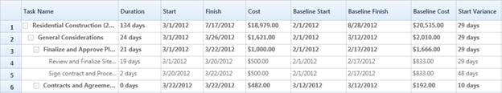

Baseline Table View will display the differences between the current progress and the baseline of the project in Gantt Grid. While invoking the appropriate method, the variance will be calculated between the actual value and the mapped baseline value, and will be displayed as the variance view in the Gantt Grid.
The variances will be calculated only for the mapped baseline fields. For example, if you have mapped only the Baseline Start to TaskAttributeMapping, then it will calculate the variance only between Start and Baseline Start and will display it in the Grid. You can revert to the default view of the Grid by invoking the corresponding method in Gantt.
Note: Variance view will have the read-only Grid. You cannot edit the cells in Gantt Grid, when it is in variance view.
Use Case Scenario
This will help the Project Leads to compare the current progress of the project to the baseline and modify or rework the plan of the existing tasks to meet deadlines. Organizations can use this to compare the current progress of the project to the initial estimation, to analyze the rework of the plan or to budget the project in order to meet deadlines and extract user requirements.

Figure 24
Methods
Table: Methods Table
|
Method |
Description |
Parameters |
Type |
Return Type |
|
LoadVarianceTableView
|
This method is used to load the Variance view of the Gantt. |
LoadVarianceTableView() |
N/A |
void. |
|
LoadDefaultTableView
|
This method is used to load the Default (Editing) view of the Gantt. |
LoadDefaultTableView() |
N/A |
void |
Adding Baseline Table View to an Application
To add Baseline Table View to an applicatipn:
1. Declare the baseline properties in the view model.
2. Map the properties to Gantt in the corresponding TaskAttributeMappingProperty.
3. To load the Variance view, call the LoadVarianceTableView() method of the Gantt.
4. To load the Default (Editing) view, call the LoadDefaultTableView() method of the Gantt.
The following codes illustrate this:
|
[XAML]
<gantt:GanttControl Grid.Row="1" x:Name="Gantt" ItemsSource="{Binding GanttItemSource}" ToolTipTemplate="{StaticResource toolTipTemplate}"> <gantt:GanttControl.TaskAttributeMapping> <gantt:TaskAttributeMapping TaskIdMapping="Id" TaskNameMapping="Name" DurationMapping="Duration" StartDateMapping="StDate" FinishDateMapping="EndDate" ChildMapping="ChildTask" ProgressMapping="Complete" PredecessorMapping="Predecessor" ResourceInfoMapping="Resource" CostMapping="Cost" BaselineCostMapping="BaselineCost" BaselineFinishMapping="BaselineEnd" BaselineStartMapping="BaselineStart" > </gantt:TaskAttributeMapping> </gantt:GanttControl.TaskAttributeMapping> </gantt:GanttControl>
|
|
[C#]
// To load the Variance table view this.Gantt.LoadVarianceTableView();
// To load the Default [Editing] view this.Gantt.LoadDefaultTableView();
|
Samples Link
To view samples:
1. Select Start -> Programs -> Syncfusion -> Essential Studio x.x.xx -> Dashboard.
2. Click Run Samples for Silverlight under User Interface Edition panel.
3. Select Gantt.
4. Expand the Baseline Support item in the Sample Browser.
5. Choose the Baseline Table View sample to launch.